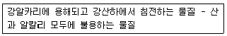
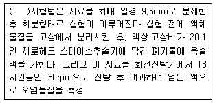

토양환경기사 (2004-12-12 기출문제)
1과목: 토양학개론
1. 마른 토양을 원통 유리칼럼에 채워 물이 든 시험접시에 거꾸로 세워 두었더니 물이 칼럼 아래에서부터 위로 올라가는 것이 관찰되었다면 이것은 토양의 무슨 작용 때문인가?
- 모세관현상
- 중력현상
- 기화현상
- 삼투압현상
(정답률: 알수없음)

2. 다음 토양층위중에서 가장 하부에 위치한 층은?
- A층
- C층
- O층
- R층
(정답률: 알수없음)
3. 토양구성 입자의 직경 즉 입도분포를 결정하기 위한 분석과 가장 거리가 먼 것은?
- 비중계분석
- 비표면적분석
- 체분석
- 침전분석
(정답률: 알수없음)
4. 토양의 부식물질 중 다음에 해당하는 물질을 순서대로 가장 올바르게 나열한 것은?

- 휴믹산(humic acid) - 휴민(humin)
- 풀브산(fulvic acid) - 휴민(humin)
- 휴민(humin) - 휴믹산(humic acid)
- 휴민(humin) - 풀브산(fulvic acid)
(정답률: 알수없음)
5. 우리나라 토양의 일반적인 특징을 기술한 내용중 맞지 않는 것은?
- 사질(모래)토양
- 낮은 유기물함량
- 중성토양
- 낮은 염기치환용량
(정답률: 알수없음)
6. 토양 중 유기물의 함량(중량비)은 보통 얼마나 되는가?
- 0.0⑤-0.⑤%
- 0.⑤-0.5%
- 0.5-5%
- 5-50%
(정답률: 알수없음)
7. 중금속이 오염된 농경지에 대한 대책방법중 적합하지 않는 것은?
- 석회질자재의 투여
- 인산자재의 투여
- 객토
- 토양산화의 촉진
(정답률: 알수없음)
8. 토양오염물질인 BTEX에 포함되지 않는 것은?
- 톨루엔
- 크실렌
- 벤젠
- 에탄올
(정답률: 알수없음)
9. 점토 광물 중 2:1형 (3층형 광물) 광물이며 양이온교환능과 비표면적이 큰 대표적인 광물은?
- 몬트모릴로나이트(montmorillonite)
- 카올리나이트(kaolinite)
- 할로이사이트(halloysite)
- 클로라이트(chlorite)
(정답률: 알수없음)
10. 다음 토양 성분중 일반적으로 단위질량당 표면적이 가장 큰 것은?
- 굵은 모래 (coarse sand)
- 가는 모래 (fine sand)
- 미사 (silt)
- 점토 (clay)
(정답률: 73%)
11. 단위 동수경사에서 대수층의 단위폭당 유량으로 투수계수와 대수층의 두께를 곱한 값으로 나타내는 대수층 지하수채수량 영향 인자는?
- 전도계수
- 투수량계수
- 저류계수
- 비수계수
(정답률: 알수없음)
12. 다음 중 일반적 토양의 무기물 구성원소 중 가장 비율이 작은 것은?
- 산소
- 규소
- 알루미늄
- 탄소
(정답률: 알수없음)
13. 토양오염물질인 카드뮴 및 그 화합물이 인체에 미치는 영향으로 틀린 것은?
- 급성증상: 기관지염, 폐기종, 신장결석
- 신장피질에 축적: 이따이이따이병의 경우는 신장이 비가역적으로 손상됨
- 저농도 장기간 노출: 저혈압, 피부궤양
- 고농도 노출: 돌연변이, 암 유발
(정답률: 알수없음)
14. 토양공기 조성에 관한 설명으로 가장 알맞는 것은?
- 대기에 비하여 탄산가스 및 상대습도가 낮고 산소는 높은 편이다.
- 대기에 비하여 탄산가스 및 상대습도가 높고 산소는 낮은 편이다.
- 대기에 비하여 상대습도는 낮고 탄산가스는 높은 편이다.
- 대기에 비하여 상대습도는 높고 탄산가스는 낮은 편이다.
(정답률: 알수없음)
15. 산성 부식질의 영향으로 토양의 무기성분이 심하게 분해되어 유동성이 매우 작은 Fe, Al 등까지도 졸(sol)상태로 되어 하층으로 이동하는 토양생성과정은?
- 염류화 작용(salinization)
- 글레이화 작용(gleization)
- 라테라이트화 작용(laterite)
- 포드졸화 작용(podzolization)
(정답률: 알수없음)
16. 다음의 토양에서 질소의 형태변화와 관여하는 미생물의 관계가 잘못 된 것은?
- NO3- → NO2- → N2O , N2로 변화 : 탈세균
- N2의 식물체내 질소화합물화 : 질소고정세균
- NO3- 의 단백질화 : 아질산균
- 단백질의 아미노산 및 NH4+화 : 유기영양 미생물
(정답률: 알수없음)
17. 토양의 용적비중이 1.18 이고, 입자비중이 2.55 일 때 토양의 공극률은?
- 46.3%
- 53.7%
- 36.7%
- 63.3%
(정답률: 알수없음)
18. 토양오염의 특징과 가장 거리가 먼 것은?
- 오염 경로의 다양성
- 피해발현의 완만성
- 오염지역의 광역성
- 오염의 비 인지성 및 타환경인자와의 영향관계의 모호성
(정답률: 알수없음)
19. 지하수의 용존 고형물 혹은 열이 지하수와 같은 속도로 수송되는 것을 무엇이라 하는가?
- 확산
- 흡착
- 이송
- 분산
(정답률: 알수없음)
20. 토양수분의 물리학적 분류중 '흡습수'에 관한 설명으로 알맞지 않는 것은?
- 상대습도가 높은 공기 중에 풍건토양을 방치하면 토양입자의 표면에 물이 흡착되는데 이 물을 흡습수라 한다
- 사질토에서의 흡습수의 양은 무게비로 0.2 - 0.3%, 부식토에서는 70%에 달한다
- 100-110℃ 에서 8-10시간 가열하면 쉽게 제거할 수 있다
- 흡습수는 pF 7이하로 약하게 흡착되어 있어 식물이 직접 이용할 수 있다
(정답률: 알수없음)
2과목: 토양 및 지하수 오염조사기술
21. 방울수란 20綽에서 정제수 20방울을 적하할 때이다. 이때의 부피는?
- 0.5㎖
- 1.0㎖
- 5.0㎖
- 10㎖
(정답률: 알수없음)
22. 저장물질이 있는 지하매설저장시설의 액상부 누출검사에서 저장시설의 액량이 저장 시설 높이의 얼마 범위 일 때 적용되는가?
- 10% 이하
- 30 ~ 50%
- 60 ~ 90%
- 90% 이상
(정답률: 알수없음)
23. 지르코늄-발색시약(zirconium-SPANDS)에 의한 불소의 흡광광도법 분석에 대한 내용 중 잘못된 것은?
- 불소는 진홍색의 지르코늄-발색시약과 반응할 경우 무색의 ZrF62-를 형성하게된다.
- 불소이온과 지르코늄이온 사이의 반응 속도는 반응 혼합물의 알칼리도에 따라 달라진다.
- 시료에 잔류염소이온이 함유되어 있는 경우 잔류염소 0.1mg당 NaAsO2 용액 한방울을 가하고 혼합하여 제거한다.
- 증류액의 노란색이 없어지면, 50% NaOH 용액을 추가 하며 증류액의 알칼리성을 유지하도록 한다.
(정답률: 알수없음)
24. 가스크로마토그래프법으로 BTEX를 측정할 때의 유효측정 농도기준으로 알맞는 것은?
- 0.01mg/kg 이상
- 0.1mg/kg 이상
- 0.⑤mg/kg 이상
- 0.5mg/kg 이상
(정답률: 알수없음)
25. 토양에서 분석대상 유기인계화합물로 규정되지 않은 성분은?
- 이피엔
- 말라티온
- 다이아지논
- 메틸디메톤
(정답률: 알수없음)
26. 시료중에 함유되어 있는 BTEX를 추출할 때 사용하는 물질로 가장 적합한 것은?
- 에틸알코올
- 메틸알코올
- 디클로로메탄
- 사염화탄소
(정답률: 알수없음)
27. 공정시험방법에 언급된 각종 용어의 정의 중 틀린 것은?
- 감압 또는 진공이라 함은 통상 15mmHg이하를 말한다.
- 가스체의 농도는 표준상태(0℃, 1기압, 상대습도 0%)로 환산 표시한다.
- 제반시험 조작은 따로 규정이 없는 한 실온에서 실시한다.
- '항량으로 될 때까지 건조한다'라 함은 같은 조건에서 1시간 더 건조할 때 전후 무게차가 g당 0.3mg 이하일 때를 말한다.
(정답률: 알수없음)
28. 수은측정에 대한 설명으로 틀린 것은?
- 흡광광도법에서는 디티존사염화탄소로 수은을 추출한다.
- 원자흡광 분석에서는 석영재질의 흡수셀을 사용한다.
- 환원 기화법은 시료에 염화제일주석을 넣고 금속수은 으로 환원하여 사용한다.
- 수은 흡광광도법은 254nm에서 흡광도를 측정한다.
(정답률: 알수없음)
29. 토양 시료의 채취 및 보관에 관련된 다음의 설명중 틀린것은? (단, 일반지역 기준)
- 토양시료채취기가 없을 때는 삽을 이용하여 채취할 수 있다.
- 시안 및 유기물질 시험용 시료는 폴리에틸렌 봉지에 보관한다.
- 수은 이외의 중금속 분석용 시료는 폴리에틸렌 봉지에 보관한다.
- 불소 시험용 시료는 폴리에틸렌 봉지에 보관한다.
(정답률: 알수없음)
30. 공정시험방법상 납 정량시 사용하는 방법이 아닌 것은?
- 원자 흡광광도법
- 흡광광도법
- 유도결합 플라스마 발광광도법
- 가스크로마토 그래피법
(정답률: 알수없음)
31. 다음은 유도결합플라즈마 발광광도법(ICP)에 대한 설명이다. 잘못된 내용은?
- 4,000∼6,000K의 고온에서 시료를 여기하므로 중질유 등과 같이 휘발성이 낮은 물질의 측정에 적합하다.
- 플라즈마의 최고온도는 15,000K 까지 이른다.
- 플라즈마는 그 자체가 광원으로 이용되기 때문에 매우 넓은 농도범위에서 시료를 측정할 수 있다.
- ICP의 토오치는 3중으로 된 석영관이 이용된다.
(정답률: 알수없음)
32. 가스크로마토그래피의 검출기 중 유기할로겐화합물, 니트로화합물 및 유기금속화합물을 선택적으로 검출할 수 있는 것은?
- 열전도도 검출기
- 전자포획형 검출기
- 수소불꽃이온화 검출기
- 불꽃광도형 검출기
(정답률: 알수없음)
33. 일반지역 시료채취지점 선정에 관한 내용으로 적합하지 않은 것은?
- 농경지의 경우는 대상지역 내에서 지그재그형으로 5-10개 지점을 선정한다.
- 공장지역 등 농경지가 아닌 기타지역의 경우는 대상 지역의 중심이 되는 1개 지점과 주변 4방위 5-10m 거리에 있는 1개 지점씩 총 5개 지점을 선정한다.
- 석유계총탄화수소 시험용 시료는 대상지역 내에서 농경지는 2개 지점을 기타지역은 대표적 지점 1개를 선정한다.
- 유기인화합물, 시안의 시험용 시료는 농경지 또는 기타지역의 구분에 관계없이 대상지역에서 대표치를 구할 수 있는 1개 지점을 선정한다.
(정답률: 알수없음)
34. 원자흡광광도법을 사용한 아연 분석에 대한 내용으로 거리가 먼 것은?
- 환류냉각관 및 비반송형 흡수용기 사용
- 측정파장은 213.9 nm
- 아연이온은 pH 9 정도에서 킬레이트 화합물을 형성
- 유효측정농도는 0.17mg/kg 이상
(정답률: 알수없음)
35. 원자흡광광도법에 대한 설명 중 옳지 않는 것은?
- 장치는 광원부-시료원자화부-단색화부-측광부로 배열된다.
- 광원은 원자흡광 스펙트럼선의 선폭보다 좁은 선폭을 갖고 휘도가 높은 스펙트럼을 방사하는 중공음극램프가 많이 사용된다.
- 원자흡광분석에 사용되는 어떠한 불꽃이라도 가연성 가스와 조연성가스의 혼합비는 감도에 크게 영향을 준다.
- 표준첨가법에 의한 검량선 작성은 측정치가 흩어져 상쇄하기 쉬우므로 분석값의 재연성이 높다.
(정답률: 알수없음)
36. 다음 보기 중 수분함량을 측정하는 과정으로 틀린 것은?
- 증발접시는 미리 1⑤-110℃에서 4시간이상 건조 후 데시케이터에서 방냉하고 항량으로 무게를 정확히 달아 사용한다.
- 시료는 수욕상에서 수분을 거의 날려보내고 1⑤∼ 110℃의 건조기 안에서 4시간 동안 건조한다.
- 증발접시는 시료의 두께가 10mm이하로 넓게 펼 수 있는 정도로 하부 면적이 넓은 것을 사용한다.
- 건조한 시료와 증발접시는 데시케이터 안에서 방냉 하고 항량으로 무게를 정확히 단다.
(정답률: 알수없음)
37. 시안을 이온전극법으로 측정하는 경우 시료의 pH는 몇으로 조절해야 하는가?
- 1∼3
- 3∼5
- 9∼10
- 12∼13
(정답률: 알수없음)
38. 다음의 내용 중 공정시험방법에서 명시한 온도에 대한 설명이 잘못 짝지어진 것은?
- 실온: 1 ∼ 35 ℃
- 상온: 15 ∼ 25 ℃
- 온수: 50 ∼ 60 ℃
- 냉수: 15 ℃ 이하
(정답률: 알수없음)
39. 유도결합플라즈마발광광도법에서 플라스마 가스로 사용되는 가스의 종류로 가장 적절한 것은?
- 수소
- 질소
- 아르곤
- 헬륨
(정답률: 알수없음)
40. 저장물질이 있는 지하매설저장시설의 기상부 미감압시험의 측정방법을 맞게 설명한 것은?
- 시험을 위한 진공속도는 매분 100㎜H2O 이상이 되도록 한다.
- 압력 안정화 유지시간 이후부터 매 분마다 60분 또는 70분 동안의 압력변화를 측정한다.
- 압력측정기간 동안 저장내용물의 온도는 15∼25℃ 범위 이내에서만 측정한다.
- 액체가 채워진 부분에 대하여는 액면레벨측정법에 의한 누출시험을 별도로 실시하여야 한다.
(정답률: 알수없음)
3과목: 토양 및 지하수 오염정화 기술
41. 토양세척공법에 대한 설명 중 적합하지 않는 것은?
- 토양 내 오염물을 세척수와 기계적 마찰력을 이용하여 처리하는 공법이다.
- 토양세척공정은 주로 오염토양의 최종 처리공정으로 이용된다.
- 토양세척장치는 대개 전처리, 분리, 굵은 토양처리, 미세 토양처리, 처리수 정화, 처리잔류물관리 공정으로 구별된다.
- 오염된 처리수는 기존의 폐수처리시설에서 정화된 후 재순환되는 것이 일반적이다.
(정답률: 알수없음)
42. 평균농도 20mg/kg의 자일렌(xylene)으로 오염된 토양의 부피가 12,000m3 라면 오염부지내 존재하는 자일렌의 총 함량은?(단, 토양 bulk density = 1.8g/cm3)
- 412 kg
- 432 kg
- 453 kg
- 496 kg
(정답률: 알수없음)
43. 바이오벤팅(Bioventing)의 설계인자에 관한 내용으로 틀린 것은?
- 대상오염물: 생분해 가능한 유기물질
- 공기투과계수: 1 ×10-4 cm/sec 이상
- 최적토양수분: 포장용수량의 25% 이상
- 추출정의 위치: 오염지역 외곽
(정답률: 알수없음)
44. 열탈착 기술에서 오염물질의 특성에 따른 탈착속도에 대하여 틀리게 설명한 것은?
- 유기물질의 분자량이 클수록 탈착속도가 느리다.
- 오염기간이 길수록 탈착속도가 빠르다.
- 유기물질의 휘발성이 낮을수록 탈착속도가 느리다.
- 비공극성 입자의 경우 탈착속도는 초기에 크고 빠르게 일어난다.
(정답률: 알수없음)
45. 오염토양을 고형화/안정화 방법으로 처리한 이후 위해성을 평가하기위한 ( )안의 용출능력 평가실험방법은?

- TCLP
- EX TOX
- MWEP
- KSLP
(정답률: 알수없음)
46. 생물학적 복원공법을 적용하여 오염토양을 처리하고자 할때 필요한 중요 환경조절인자와 가장 거리가 먼 것은?
- 전자 수용체
- pH
- 토양밀도
- 영양물질
(정답률: 알수없음)
47. 식물정화법의 대표적 처리 기작에 대한 설명으로 틀린것은?
- phytodegradation - 식물이 독성물질을 분해하는 효소를 분비하여 오염물질을 무독성으로 전환시켜 처리함
- phytomobilization - 식물의 뿌리가 오염물질의 이동을 위한 공간을 만들어 토양공기와의 반응성을 향상시켜 처리함
- phytoextraction - 식물조직이 무기오염물질을 체내에 흡수하여 축적함으로써 오염물질을 제거함
- phytostabilization - 금속과 같은 오염물질이 용존 상태에서 침전되거나 식물뿌리 또는 주변 토양에 흡착되어 안정화됨
(정답률: 30%)
48. TCE로 오염된 지하수를 양수하여 폭기조 내에서 공기분산법을 이용하여 제거하는 경우, 폭기조의 부피가 500m3인 처리장에 1일 2000m3의 오염 지하수가 유입한다면 폭기시간은?
- 4시간
- 6시간
- 12시간
- 18시간
(정답률: 알수없음)
49. 토양처리기술중 굴착후 처리기술로 가장 적절한 것은?
- 생물학적 분해법(biodegradation)
- 토양경작법(landfarming)
- 바이오벤팅법(bioventing)
- 토양세정법(soil flushing)
(정답률: 알수없음)
50. 오염토양의 불용화를 위한 화학적 처리방법에 대한 설명으로 알맞지 않은 것은?
- 카드뮴화합물은 차아염소산나트륨을 첨가하여 산화 분해시킨다.
- 비소화합물은 염화철(II)를 첨가하여 비소산을 생성 시킨다.
- 수용성 수은화합물은 황화나트륨을 첨가하여 황화 수은을 생성시킨다.
- 6가크롬 화합물은 황산철(II)과 같은 환원제를 첨가하여 3가크롬을 생성시킨다.
(정답률: 알수없음)
51. 독립영양미생물(화학합성 자가영양)의 탄소원과 에너지원을 알맞게 짝지은 것은?
- CO2 - 무기물의 산화환원반응
- CO2 - 유기물의 산화환원반응
- 유기탄소 - 무기물의 산화환원반응
- 유기탄소 - 유기물의 산화환원반응
(정답률: 알수없음)
52. 원위치 처리방법 적용에 적합한 사항과 가장 거리가 먼것은?
- 처리량이 많다
- 오염원의 분포가 광범위하고 농도가 낮다
- 처리부지 확보가 용이하다
- 처리비용이 저가이다
(정답률: 10%)
53. 지하수 처리기술중 공기분사기법(Air Sparging)에 관한 설명으로 틀린 것은?
- 오염물질이 분포된 깊이와 현장의 특수한 지질학적인 특성을 고려해야 한다.
- 오염된 지하수를 양수하여 대기중에서 공기를 주입 하므로 다량의 지하수정화가 가능하다.
- 원위치 처리기술이다.
- 휘발성 유기물질과 유류오염물질이 처리대상이다.
(정답률: 알수없음)
54. 굴착된 오염토양을 생물반응기에 넣고 오염물질과 미생물 등이 일정 용기에서 접촉함으로써 처리되는 기술인 슬러리상 처리(Slurry-phase Treatment) 기술에 대한 설명 중 틀린 것은?
- 오염토양을 짧은 시간내에 처리하고자 하는 경우에 적용한다.
- 처리된 슬러리는 탈수과정없이 토양으로 환원시켜 생분해능을 유지시킨다.
- 비할로겐 휘발성물질을 처리 하는데 효과적이다.
- 반응기에 넣기 전에 토양을 선별하여야 한다.
(정답률: 알수없음)
55. 생물학적 복원기법에서 호기성 조건을 위하여 산소를 주입하게 되는데 적정한 산소주입 방법이 아닌 것은?
- 대기 중의 공기 주입
- 압축산소 주입
- 과산화질소(N2O2) 주입
- 과산화수소(H2O2) 주입
(정답률: 알수없음)
56. 수직방어벽인 슬러리월에 관한 설명으로 틀린 것은?
- 오염되지 않은 지하수를 오염된 지역으로부터 격리 시킨다.
- 지하로의 침출수흐름을 제어한다.
- 오염물질의 분해 또는 지체효과를 증진시킨다.
- 투수계수가 매우 낮은 지역에 유용하다.
(정답률: 알수없음)
57. 폐기물의 고형화 및 안정화의 장점과 가장 거리가 먼것은?
- 부피의 감소가 가능하여 폐기물의 취급이 용이하다.
- 폐기물의 비표면적증가로 매립지반안정 효과가 있다.
- 폐기물내 오염물질이 독성형태에서 비독성형태로 변형된다.
- 폐기물의 용해성이 감소한다.
(정답률: 알수없음)
58. 토양증기추출과 비교하여 Bioventing의 장점이라 볼 수 없는 것은?
- 추가적인 영양염류의 공급이 필요없음
- 장치가 간단하고 설치가 용이함
- 배출가스 처리의 추가비용이 없음
- 적용부지의 범위가 넓음
(정답률: 55%)
59. 토양세척법을 적용할 경우에는 토양의 입도분포가 매우 중요하다. 어느 오염토양의 입도분포곡선에서 10%, 30%, 60% 통과백분율에 해당하는 입자 직경이 각각 0.10mm, 0.30mm 및 0.60mm인 경우, 균등계수(Cu)와 곡률계수(Cz)는 각각 얼마인가?
- Cu = 2, Cz = 3
- Cu = 6, Cz = 1.5
- Cu = 6, Cz = 3
- Cu = 2, Cz = 12
(정답률: 알수없음)
60. 식물정화에 중요한 역할을 하는 효소에 대해 잘못 짝지어진 것은?
- nitroreductase - TNT 분해
- dehalogenase - TCE 분해
- peroxidase - 페놀 분해
- laccase - 제초제 분해
(정답률: 알수없음)
4과목: 토양 및 지하수 환경관계법규
61. 환경부장관이 관계중앙행정기관의 장 또는 시,도지사에게 요청할 수 있는 조치와 가장 거리가 먼 것은?
- 토양오염방지를 위한 객토 등 농토배양사업
- 산업시설 등의 조치로 인하여 훼손된 토양의 복구
- 주변토양을 오염시킬 우려가 있는 시설에 대한 이전
- 폐광지역의 광물 찌꺼기 등으로 인한 주변농경지 등의 광산공해방지대책
(정답률: 알수없음)
62. 다음 중 토양오염조사기관이 수행하는 업무와 가장 거리가 먼 것은?
- 토양광역조사
- 토양환경평가
- 토양오염도검사
- 오염토양개선사업의 감리, 감독
(정답률: 알수없음)
63. 토양오염실태조사결과 우려기준을 넘는 지역의 오염원인자에게 토양전문기관으로부터 토양정밀조사를 받도록 토양 오염방지조치명령을 내리는 권한을 가진 자는?
- 환경부장관
- 시,도지사
- 시,도 보건환경연구원장
- 지방환경관서의 장
(정답률: 알수없음)
64. 토양관련전문기관으로 지정받고자 하는 자는 토양관련 전문기관지정신청서를 누구에게 제출해야 하는가?
- 지방환경관서의 장
- 환경부장관
- 시ㆍ도지사
- 시ㆍ도 보건환경연구원장
(정답률: 알수없음)
65. 전국적인 토양오염실태를 파악하기 위해 환경부장관이 고시하는 측정망설치계획에 포함되어야 하는 사항이 아닌 것은?
- 측정망 설치시기
- 측정토양시료채취 방법 및 항목
- 측정망 배치도
- 측정지점의 위치 및 면적
(정답률: 알수없음)
66. 지하수법에서 지하수의 보전관리를 위하여 필요하다고 인정되는 경우, 지하수 보존지구로 지정될 수 있는 요건에 해당되는 지역은?
- 지하수개발ㆍ이용량이 기본계획 또는 지역관리계획에서 정한 지하수개발가능량에 비하여 현저하게 높다고 판단되는 지역
- 지하수의 지나친 개발ㆍ이용으로 인하여 지하수의 고갈현상ㆍ지반침하 또는 건천화가 발생하거나 발생할 우려가 있는 지역
- 지하수를 이용하는 하류지역과 수리적으로 연결된 상류의 지하수함양지역
- 지하수의 개발桀이용으로 인하여 주변 생태계의 생육에 심각한 악영향을 미치거나 미칠 우려가 있는 지역
(정답률: 알수없음)
67. 토양보전대책지역의 지정시 농경지외의 지역의 경우 지정 기준으로 적절한 것은?
- 지표면으로부터 15센티미터까지의 토양오염도가 대책기준을 초과
- 지표면으로부터 30센티미터까지의 토양오염도가 대책기준을 초과
- 지표면으로부터 지하수(대수층)면상부 토양사이의 토양오염도가 대책기준을 초과
- 시ㆍ도지사가 대책지역지정을 요청한 지역으로 그 면적이 5,000제곱미터 이상
(정답률: 알수없음)
68. 다음중 토양오염조사기관이 갖추어야 할 장비에 해당되지않는 것은?
- 초음파 추출장치
- I.C.P(Inductively Coupled Plasma)
- 전기전도도 측정장비
- 가스크로마토그래프(PID)
(정답률: 알수없음)
69. 다음중 지하수 오염유발시설관리자가 정화명령을 받은 경우에 조치해야 할 오염지하수정화기준으로 틀린 것은?
- 카드뮴이 0.01mg/L 이하 일것.
- 페놀이 0.5 mg/L 이하 일것
- 석유계총탄화수소가 1.5mg/L 이하 일것.
- 1.1.1-트리클로로에탄이 0.15mg/L 이하 일 것
(정답률: 알수없음)
70. 환경부장관이 수립하도록 되어있는 토양보전기본계획에 반드시 포함되어야 할 사항과 가장 거리가 먼 것은?
- 토양오염의 현황
- 토양오염복원 현황 및 계획
- 토양오염의 방지에 관한 사항
- 토양보전에 관한 시책방향
(정답률: 알수없음)
71. [석유류의 제조 및 저장시설중 ( )등을 저장하고 있는 시설의 경우에는 TPH만을 검사 항목으로 할 수 있다] ( )안에 알맞는 내용은?
- 항공유
- 납사
- 휘발유
- 크실렌
(정답률: 알수없음)
72. 지하수를 생활용수로 이용하는 경우, 적용되는 수질기준항목(일반오염물질)에 해당되지 않는 것은?
- pH
- 질산성질소
- 일반세균
- COD
(정답률: 알수없음)
73. 다음중 토양보전대책지역내에서 오염원인자가 실시하는 오염토양개선사업에 대한 감리기관으로 맞는 것은?
- 환경관리공단
- 국립환경연구원
- 지방환경관리청
- 시ㆍ도보건환경연구원
(정답률: 알수없음)
74. 다음중 토양환경보전법상 '가지역'의 토양오염우려기준으로 틀린 것은?
- 테트라클로로에틸렌 : 8㎎/㎏
- 납 : 100㎎/㎏
- 비소 : 6㎎/㎏
- 페놀 : 4㎎/㎏
(정답률: 알수없음)
75. 지하수의 수질보전을 위하여 수질오염실태를 측정하여야 하는데 지하수 수질측정망 설치계획을 수립ㆍ고시하여야 하는 자는?
- 환경부장관
- 건설교통부장관
- 농림부장관
- 시ㆍ도지사
(정답률: 알수없음)
76. 부정한 방법으로 토양관련 전문기관의 지정을 받은자 또는 공무원의 특정토양오염유발시설 출입ㆍ검사를 거부ㆍ방해 또는 기피한자에 대한 처벌규정은?
- 2년 이하의 징역 또는 1500만원이하의 벌금에 처함
- 2년 이하의 징역 또는 1000만원이하의 벌금에 처함
- 1년 이하의 징역 또는 1000만원이하의 벌금에 처함
- 1년 이하의 징역 또는 500만원이하의 벌금에 처함
(정답률: 알수없음)
77. 토양환경보전법 및 동법 시행령 규정에 따르면 시장ㆍ군수ㆍ구청장이 토양오염방지시설의 설치 등을 명한 경우, 이 시정명령을 이행기간내에 이행을 못한자에 대하여 공사의 규모ㆍ공법에 따라 매회 1년 범위안에서 최대 몇 회까지 이행기간을 연장할 수 있는가?
- 1회
- 2회
- 3회
- 4회
(정답률: 알수없음)
78. 토양환경보전법에서 사용하는 용어에 대한 정의로 알맞지 않은 것은?
- '토양오염'이라 함은 사업 활동 기타 사람의 활동에 따라 토양이 오염되는 것으로서 사람의 건강이나 환경에 피해를 주는 상태를 말한다.
- '토양오염물질'이라 함은 토양오염의 원인이 되는 물질로서 환경부령이 정하는 것을 말한다.
- '토양오염유발시설'이라 함은 토양오염물질을 생산ㆍ운반ㆍ저장ㆍ취급ㆍ가공 또는 처리함으로써 토양을 오염시킬 우려가 있는 시설로 환경부령이 정하는 것을 말한다.
- '특정토양오염유발시설'이라 함은 토양을 현저히 오염시킬 우려가 있는 토양오염유발시설로서 환경부령이 정하는 것을 말한다.
(정답률: 알수없음)
79. 토양보전기본계획은 몇 년마다 수립ㆍ시행되어야 하는가?
- 3년
- 5년
- 10년
- 15년
(정답률: 알수없음)
80. 지하수조사계획서에 포함되어야 하는 사항과 가장 거리가 먼 것은?
- 조사지역
- 조사범위
- 조사기간
- 원상복구계획
(정답률: 알수없음)
설명: 모세관현상은 토양 내부의 미세한 구멍이나 작은 통로를 통해 물이 위로 올라가는 현상을 말한다. 이는 토양 내부의 표면장력과 코플란드 수(토양 입자와 물 입자 간의 상호작용)에 의해 발생한다. 따라서, 물이 칼럼 아래에서부터 위로 올라가는 것은 모세관현상에 의한 것이다. 중력현상은 물체가 아래로 떨어지는 현상, 기화현상은 물이 기체 상태로 변하는 현상, 삼투압현상은 액체나 기체가 공간을 채우려는 성질을 말한다.